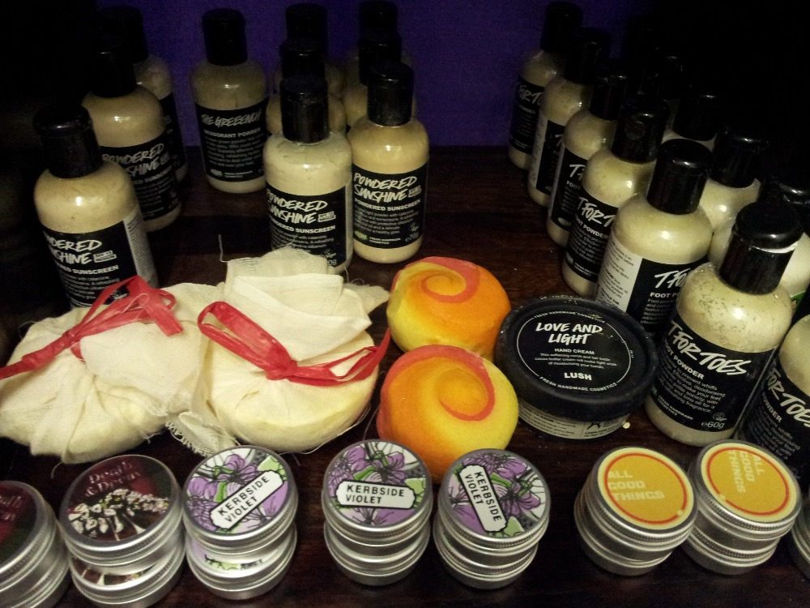

Sistah Space started without any finances at all. It was very hard and we relied heavily on goodwill of our local community and the wider public. We could not have helped so many people without you and we are grateful for your support thus far. Donations are essential for us to keep delivering the unique service that we offer that caters for African heritage women and girls. It will help us provide a safe venue where survivors/victims and their families can get the support they so desperately need.
Your donations help us provide practical support and assist us with utility bills, travel, venue costs and providing essential refreshments for survivors and volunteers. Your donations also means we can organise residential visits and days out for those in need of respite. The money you help us raise means that we can continue to help those vulnerable victims that are often suffering in silence.
Hannah Griffiths delivers a cheque for over £300 to Sistah Space. The money was raised on our behalf by Hannah's wonderful husband who ran the Hackney marathon.
Lush have donated a range of their products to Sistah Space.
It cost a considerable amount of money to support so many survivors, pay associated costs of running a building, travel and food for service users and volunteers and other costs. We have a limited income and need to raise funds for several necessities.
A vehicle is perhaps our single most expensive purchase, but it is one of the most needed. As winter approaches, it has become increasingly difficult to do outreach work, get to a crisis situation/Sistah Space in a short space of time and collect donated items. Coupled with the fact that many of our calls for assistance are after hours and at weekends. We are not concerned with the look of the vehicle, only that it is safe and reliable.
Sistah Space were the first to begin the UNDERGARMENT, TOILETRIES AND OTHER PERSONAL ITEMS CAMPAIGN. This was to accommodate the survivors who had to leave their home without notice because of domestic violence/abuse and were unable to afford or collect personal items. THIS APPEAL IS ONGOING and we request items such as knickers, bras, cosmetics and any other brand new products. Please ensure to donate brand new items, we have offers of nearly new and hardly worn items which we respectfully decline. Our survivors depend on us to treat them with dignity and kindness, your help in ensuring that they are gifted new items is very much appreciated.
If you are donating finance to a specific cause (i.e vehicle, Xmas appeal etc), please indicate which cause you would like the donation to support.